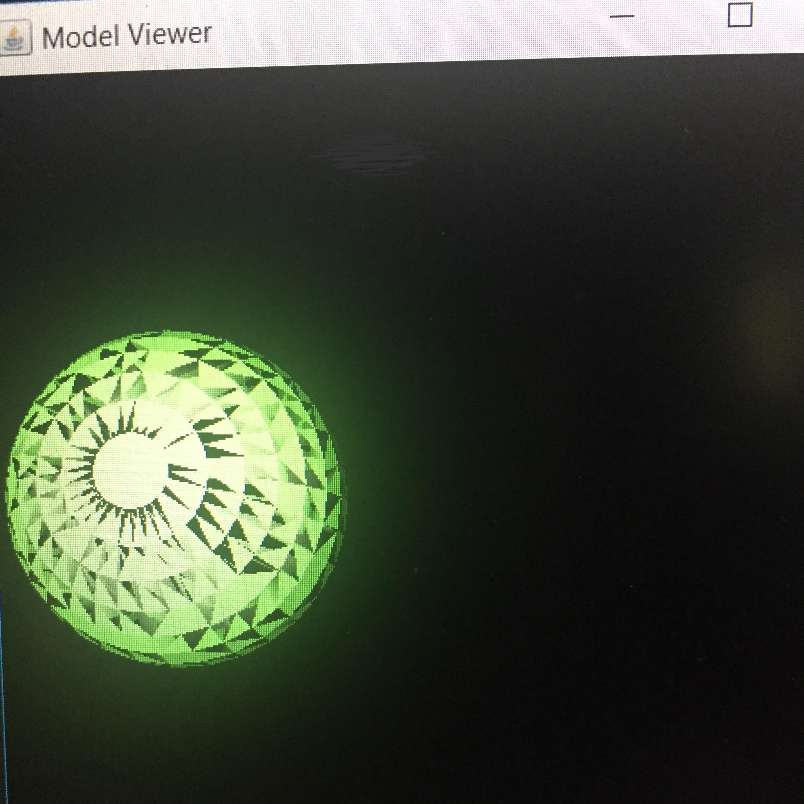
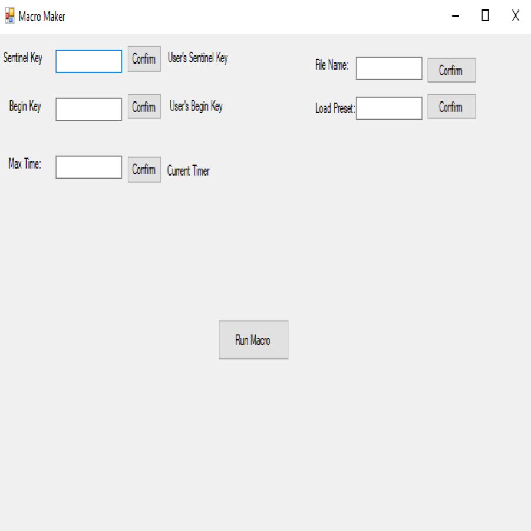
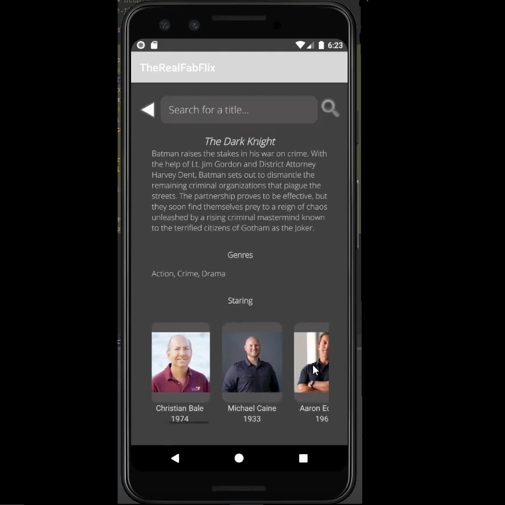
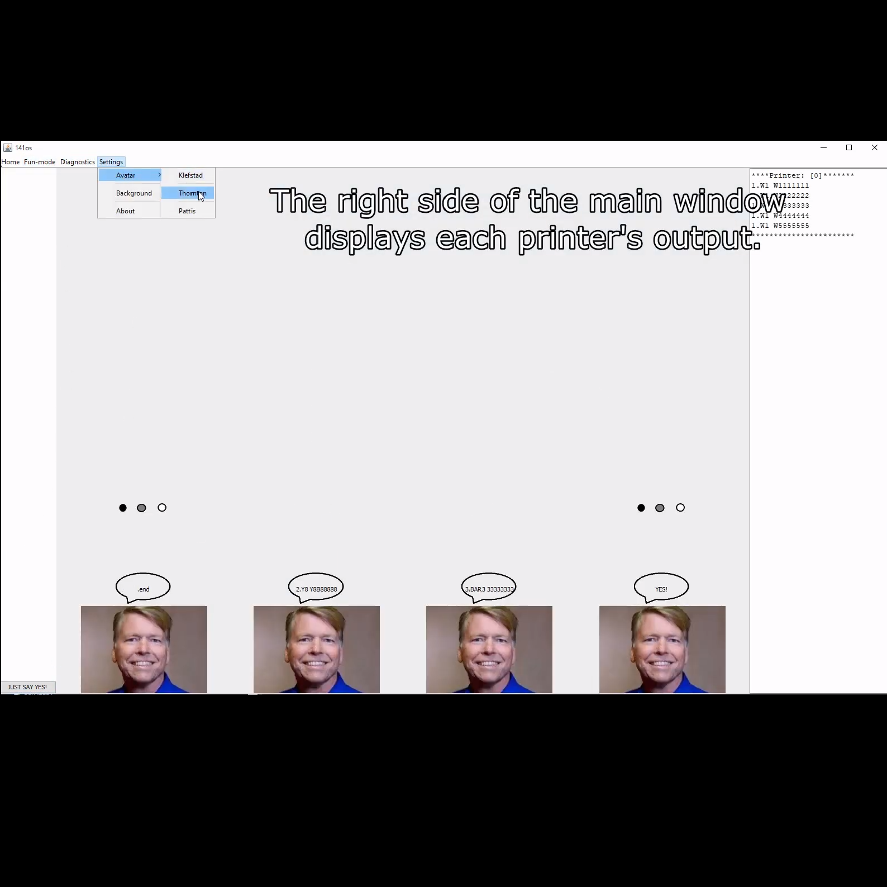
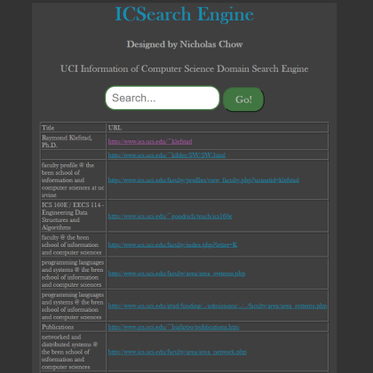

About Me
My interest in Computer Science first began at the age of 13. Most of my exposure to the field was in the form of video game modding and hardware modifications for video game consoles. While in high school, I explored video game development with Unity and taught myself Java. Following my high school graduation, I started my college experience at UC Merced and ended it at UC Irvine. Through these schools I have taken courses in Data Structures, Algorithms, Operating Systems, Information Retrieval, Project in Web Applications (Full Stack), Computer and Network Security, as well as Database Management. I have explored many different languages and technologies within Computer Science as described below.
Skills
Fluent In
I love Java.Java6+ years
Python 2+ years
C++4+ years
HTML/CSS2+ years
JavaScript1+ years
SQL2+ years
Experience With
C, C#, NoSQL
Software
IntelliJ, Visual Studio, Linux, MySQL, MongoDB, WebStorm, Git
Frameworks/Architectural Styles
REST, Django, Grizzly
Personal Projects
JEngine

Jogel

MacroMaker

Academic Projects
FabFlix (Android)

Mini Operating System

ICS Domain Search Engine
